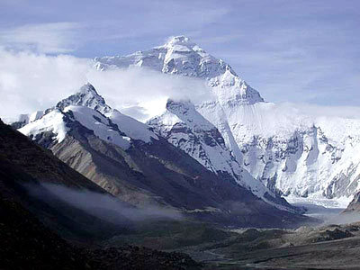
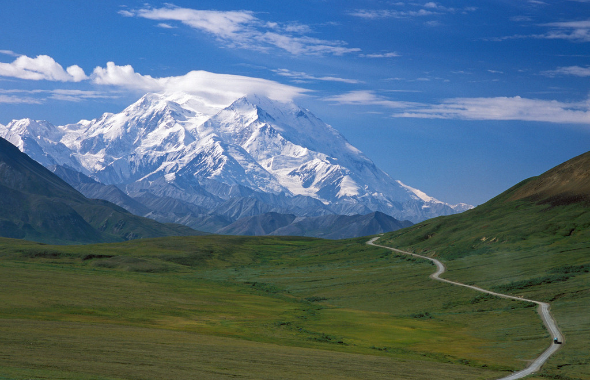

青藏高原被喻为“世界屋脊”，一向以其独特的人文和自然景观闻名于世，是科学探险、考察和生态旅游的胜地。而位于青藏高原地区形形色色的自然保护区，又是世界屋脊上生态环境最奇特、生物资源最丰富的自然资源宝库，具有极高的科学价值。
青藏高原地域辽阔，面积近240万平方公里，占中国国土总面积的1/4左右。青藏高原自然保护区的一大特色是面积大。位于西藏北部高寒地区羌塘自然保护区，面积达24.7万平方公里，不仅冠居中国和亚洲，在全世界也是数一数二的特大面积自然保护区。此外，西藏申扎、珠峰等保护区的面积也达到了3至4万平方公里。这对于内地的自然保护区来说，是无法与之相比的。
在漫长的地质发育与自然演替过程中，青藏高原不仅形成了与世了迥异的高寒草原与草甸生态系统，还兼有沙漠、湿地及多种森林类型自然生态系统。在这特殊的地理环境中保有许多蔚为奇观的地质遗迹和绚丽多姿的自然景观，蕴育了极其丰富的野生动植物资源。因此，青藏高原的自然保护区的类型也极为丰富多彩。
在青藏高原，人们既可以看到以保护高原特有的综合性自然生态系统为目的的保护区，如拥有高山寒漠、草原与森林等山地垂直带的珠穆朗玛峰保护区；也可以见到以保护某一特殊植被类型或珍稀物种为目 的的保护区，如以保护热带季雨林为主的墨脱保护区和专为保护林芝巴吉的古老巨柏林而设置的保护点。
青藏高原特殊的生态环境中生存着一些极具特色的珍稀野生动物，而专为保护这些“国宝”建立的保护区，更为全球野生动物保护组织和动物学家所瞩目。如为保护大熊猫为主的川西卧龙保护区就位于青藏高原东缘的横断山区，还有藏东类乌齐马鹿自然保护区和昌都芒康滇金丝猴保护区等。 地址：北京市 北四环东路131号
青藏高原地区自然风光奇丽，具有许多特有的地质地貌类型，为保护这些自然遗迹而建立的保护区，对于一般旅游者来说，更显得魅力无穷。其中最为著名的是以保护自然风景为主的四川南坪九寨沟保护区。此外，距九寨沟不远的松潘黄龙石灰泉钙华地貌保护区、贡嘎山海螺沟冰川森林公园、青海卓尼莲花山保护区和云南中甸碧塔海保护区等，也各具特色，具有很高的观赏价值。
青藏高原的自然保护区丰富多彩，涵盖着深邃的科学内容。在全球最高、自然环境最为独特多样的区域内所建立的各类保护区，几乎包括了我国境内所有的主要陆地生态系统，尤其高原特有的高寒草地、荒漠及湖泊湿地等生态系统与有关的珍稀野生动植物及奇异的自然景观相结合而放射出的异彩，为世界罕见。它们不仅为人类提供了高原自然界的原始“本底”，保存了许多珍稀濒危动植物，而且也为开展有关青藏高原的地学、生物学等学科的研究，提供了理想的基地和天然实验室。
青藏高原的自然保护区，为在这一地区独特多样的生态环境中生存的野生动植物提供了较为安全的繁衍场所。在青藏高原上，生活着大约210种野生哺乳动物，占全国总种数的50％左右。在这些野生动物中国家一、二级保护种占有很大比例，大熊猫、金丝猴、藏羚、野牦牛、藏野驴、 盘羊、雪豹、羚牛、白唇鹿、梅花鹿等著名动物都在其中。青藏高原地区有维管植物12000种以上，占全国总种数的40％左右，桫椤、巨柏、喜马拉雅长叶松、喜马拉雅红豆杉、长叶云杉、千果榄仁等珍稀濒危植物都在这一地区有分布或特产于此。尤其值得一提的是，青藏高原是世界上杜鹃花种类最为丰富的地区，有“杜鹃花王国”之誉。而这些珍稀动植物均是青藏高原自然保护区的主要保护对象。
由于青藏高原地广人稀，人为干扰破坏相对较轻，大部分保护区自然生态系统保存完好，又由于高原自然生态系统较脆弱，易受外界因素干扰破坏，所以大多数采取封闭式的保护方式，禁止在保护区内进行非法或不合理的经营活动。对于一些已经开放旅游的森林公园和保护区，应提倡生态旅游，严格禁止破坏自然生态环境和动植物资源的旅游活动，正确处理好旅游与保护的矛盾，实现可持续发展的战略目标。